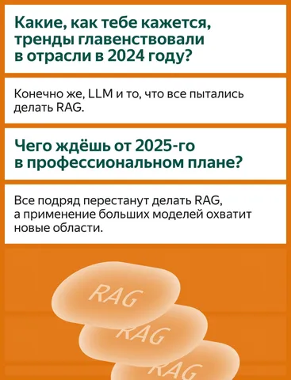
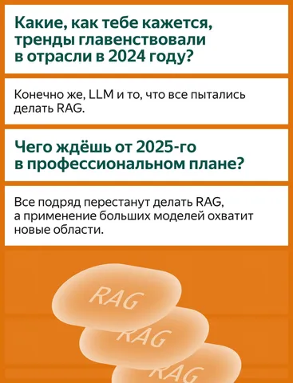

⚡️Внимание!
Обнаружен лучший постер второго дня ICLR 2025!
Обнаружен лучший постер второго дня ICLR 2025!
1 942 просмотров · 42 реакций
Открыть в Telegram · Открыть пост на сайте


Выше можно сравнить два снимка (слева — без патологии, справа — с вероятностью патологии 83%) и получить представление о том, как сложно увидеть различия невооружённым глазом.


 



Первым привлёк внимание туториал Evaluating Large Language Models — Principles, Approaches, and Applications о базовых подходах к оценке LLM. Особенно полезно ознакомиться тем, кто сталкивается с острым желанием контрагентов решить все проблемы за счёт получения модели идеального качества. Мы-то с вами знаем, что копать надо ещё и в сторону продуктовых метрик. Подробнее об этом туториале — в канале Душный NLP.
Туториал Opening the Language Model Pipeline: A Tutorial on Data Preparation, Model Training, and Adaptation от ребят из Ai2. Базовый обзор того, как готовится LLM, из каких этапов состоит пайплайн её построения. Подробно описано, как работать с данными для обучения, обрабатывать, вычищать, принимать решения по ним. Разбираются этапы предобучения и постобучения.
А ещё — несколько статей с увлекательными и местами неожиданными кейсами.
To Believe or Not to Believe Your LLM: IterativePrompting for Estimating Epistemic Uncertainty
Авторы предложили метрику для оценки уровня неопределённости LLM и того, насколько ей можно доверять. Метод основан на итеративных промптах без привлечения внешних данных.
AllClear: A Comprehensive Dataset and Benchmark for Cloud Removal in Satellite Imagery
Кейс с датасетом об удалении облаков со спутниковых снимков. Исследователи определяют, что происходит под облаком, за счёт данных в других диапазонах спектра. Потенциально полезная вещь для тех, кто занимается картами. Облака — те что на небе, а не вычислительные.
SPIQA: A dataset for multimodal question answering on scientific papers
Датасет по мультимодальным вопросам и ответам из научных статей. Пример работы со сложными текстами, специфической терминологией и задачей поиска ответа. Особенность датасета — наличие картинок и таблиц (которые часто встречаются в научных статьях), а главное — вопросов и ответов по их содержанию. Прогнав несколько моделей и разных вариаций промтов, делают вывод, что использование полного текста статьи и приемов Chain-of-Thoughts приводит к значительно более высокому перформансу модели на датасете.
BuckTales: A multi-UAV dataset for multi-object tracking and re-identification of wild antelopes
Авторы с помощью дронов и искусственного интеллекта создали набор данных для изучения диких антилоп. Он позволяет отслеживать движения множества животных одновременно и распознавать каждую особь в сложных условиях дикой природы.


Понравился доклад от Waymo: AI for Autonomous Driving at Scale. Они обзорно рассказали про свой стек: используют трансформеры, пытаются создать собственную Foundation-модель для автономных машин и интегрируют VLM для разметки. Докладчик, правда, больше «лицо» проекта, а за подробностями отсылает к команде.
Интересный туториал Opening the Language Model Pipeline: A Tutorial on Data Preparation, Model Training, and Adaptation — с практическими советами по обучению LLM. Любопытно, что некоторые их выводы сходятся с нашими: например, 10k примеров для SFT (Supervised Fine-Tuning) и 100k для обучения с подкреплением по вознаграждению (Reward) оказались разумными цифрами.
А ещё пообщалась на экспо с исследователями из разных компаний и собрала немного любопытного:⚪️ Ресёрчер из Facebook поделился, что компания всё активнее вкладывается в обучение с подкреплением (RL). Считают, что задача претрейна уже решена, и теперь важно оптимизировать последовательность обучения (RS, DPO, PPO). Используют синтетику, меняя инстракты: например, из диалога о физике «делают» диалог о биологии.⚪️ А вот Google, как оказалось, по-прежнему ориентированы на улучшение результатов через претрейн. Говорят, что их новая модель не уступает на некоторых бенчмарках o1 как раз благодаря качественному предобучению.


Бесконечная очередь на регистрацию, которая, не останавливаясь, идёт змейкой. Кажется, на самом деле, это лента Мёбиуса, и нас обманывают.
Если говорить про тренды, было уже два доклада с упоминанием специализированных Foundation Models: для автономного транспорта и e-commerce.
В Exhibition Area крайне оживлённо. Провела там около двух часов — успела обойти только треть стендов и пообщаться с некоторыми участниками. Например, спросила у HR Tesla, дают ли они имена своим роботам — к сожалению, нет.